El Golfo y el Caribe tienen agua más caliente y son menos profundos y sus costas son más húmedas que las del Océano Pacífico.Hay muchos manglares y arrecifes de coral, en donde viven muchas plantas y animales.
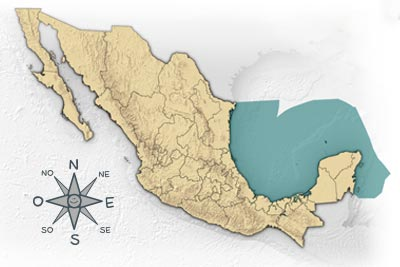
Mangle Rojo
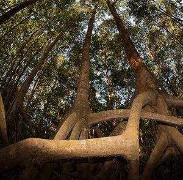
Soy un arbolito muy resistente a la sal y por eso puedo vivir a la orilla del mar. Vivo formando bosques con otras especies de mangles, pero me distingo de ellas por mis raíces que parecen zancos. Muchos insectos visitan mis florecitas amarillentas. Debajo del agua protegidos por mis raíces viven gran cantidad de peces, cangrejos y almejas.
Fragata
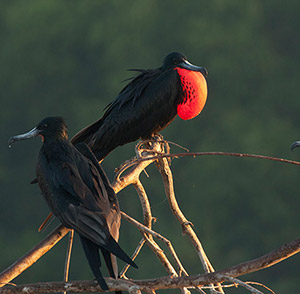
Soy un ave marina pariente de los pelícanos. Los machos tenemos un saco rojo en la garganta que inflamos como globo para coquetear con las hembras. Me alimento de peces que generalmente le robo a otras aves cuando van volando. ¡Je je! Anidamos en grupos en los manglares.
Águila Pecadora
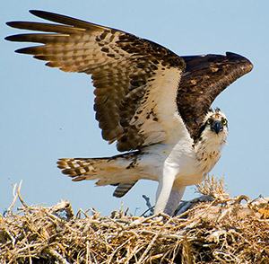
Vivo cerca de las costas o de los lagos. Me alimento de peces que capturo con mis fuertes patas y largas garras. Los localizo desde el aire y me aviento en picada sobre ellos con las patas por delante para sujetarlos. Construyo un gran nido que utilizo año tras año junto con mi pareja.
Mapache
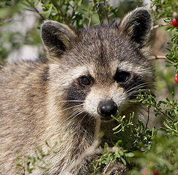
Soy un mamífero carnívoro. Me gusta estar cerca del agua ya que me alimento de deliciosos cangrejos, peces y lagartijas. Puedo treparme a los árboles con gran facilidad. Soy inconfundible por ese antifaz que llevo en la cara y mi hermosa cola anillada. Mis huellas en el lodo parecen manitas de niño.
Tortuga Verde
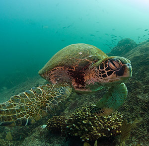
Cuando pequeña soy carnívora y me alimento de camaroncitos y medusas pero ya de adulta soy herbívora y como pastos marinos y algas cerca de las costas. Los tiburones son mis depredadores al igual que los seres humanos. Al igual que otras tortugas puedo recorrer distancias inmensas en el mar.
Cangrejo Cacerola
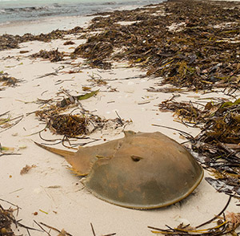
A pesar de mi nombre, no soy pariente de los cangrejos sino que estoy más relacionado a las arañas y alacranes. Me consideran un fósil viviente, ya que desde hace millones de años no he cambiado de forma. Me alimento de gusanos, caracoles y otros animalitos.
Flamenco
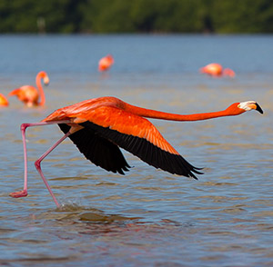
Soy un ave marina inconfundible, por mi color, mi pico y mis largas y flacas patas. Vivo en grandes grupos cerca de las costas. Me alimento de pequeños camaroncitos que le dan el color a mis plumas rosas. La vida en grupo nos permite estar más seguros ya que es más fácil que nos demos cuenta si hay depredadores a la vista.
Cangrejo Ermitaño
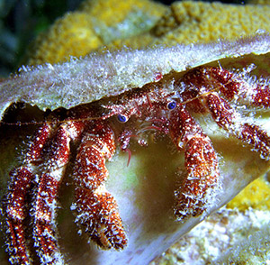
Soy pariente de cangrejos y camarones. Vivo en la orilla del mar. Me protejo viviendo dentro de una casita vacía de caracol que cargo conmigo. Cuando crezco tengo que buscar una más grande porque si no viviría muy apretado. Me alimento de algas y de pequeños pedacitos de materia orgánica, pero puedo pellizcar con gran fuerza si me molestan.
Tortuga Golfina
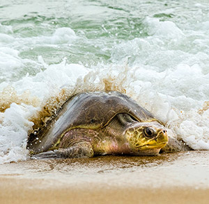
Soy una de las tortugas marinas más pequeñas. Me alimento de medusas, langostas, camarones, caracoles, peces, pastos marinos y algas, que son riquísimos. Como las otras tortugas marinas, después de varios años en alta mar, regreso a la playa donde nací.
Gran Barracuda
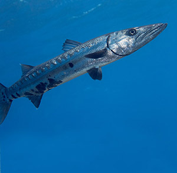
También me llaman picuda. Soy un depredador voraz. Permanezco muy quietecito y cuando pasa algún pez distraído... ¡¡Zaz!! Ni cuenta se da por dónde llega el trancazo. Cuando jóvenes vivimos en grupos, pero al crecer nos volvemos solitarios.
Pulpo de Roca
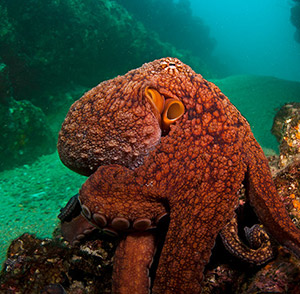
Soy el pariente inteligente de caracoles y almejas. Vivo entre las rocas sumergidas. Me alimento de cangrejos y camarones. Soy solitario y territorial, es decir que no dejo que otros bichos se acerquen por donde yo vivo. Mi piel cambia de color y de esta forma me vuelvo invisible entre las rocas.
Corales
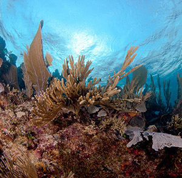
Aunque no lo parecemos, somos animales coloniales. Si nos ves de cerca te darás cuenta que estamos formados por miles de pequeños animalitos llamados pólipos. Somos carnívoros y nos alimentamos de animales aún más pequeños que nosotros conocidos como zooplancton. -Hazte para allá. No, tú hazte para allá.